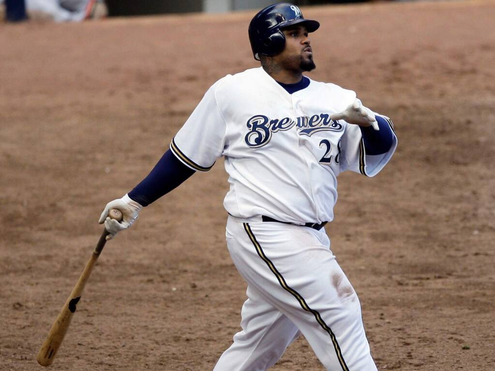
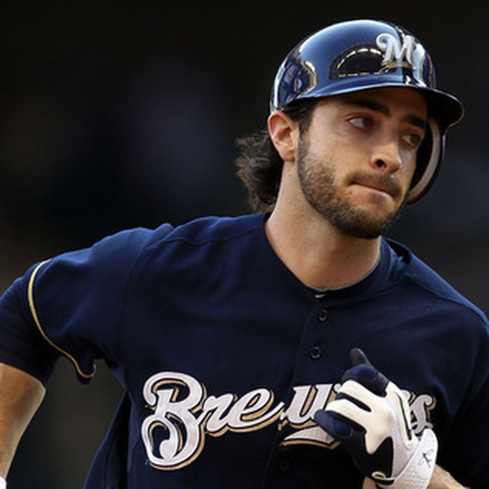
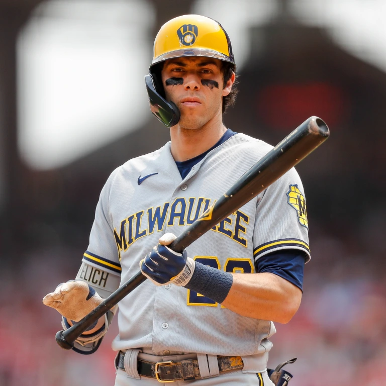
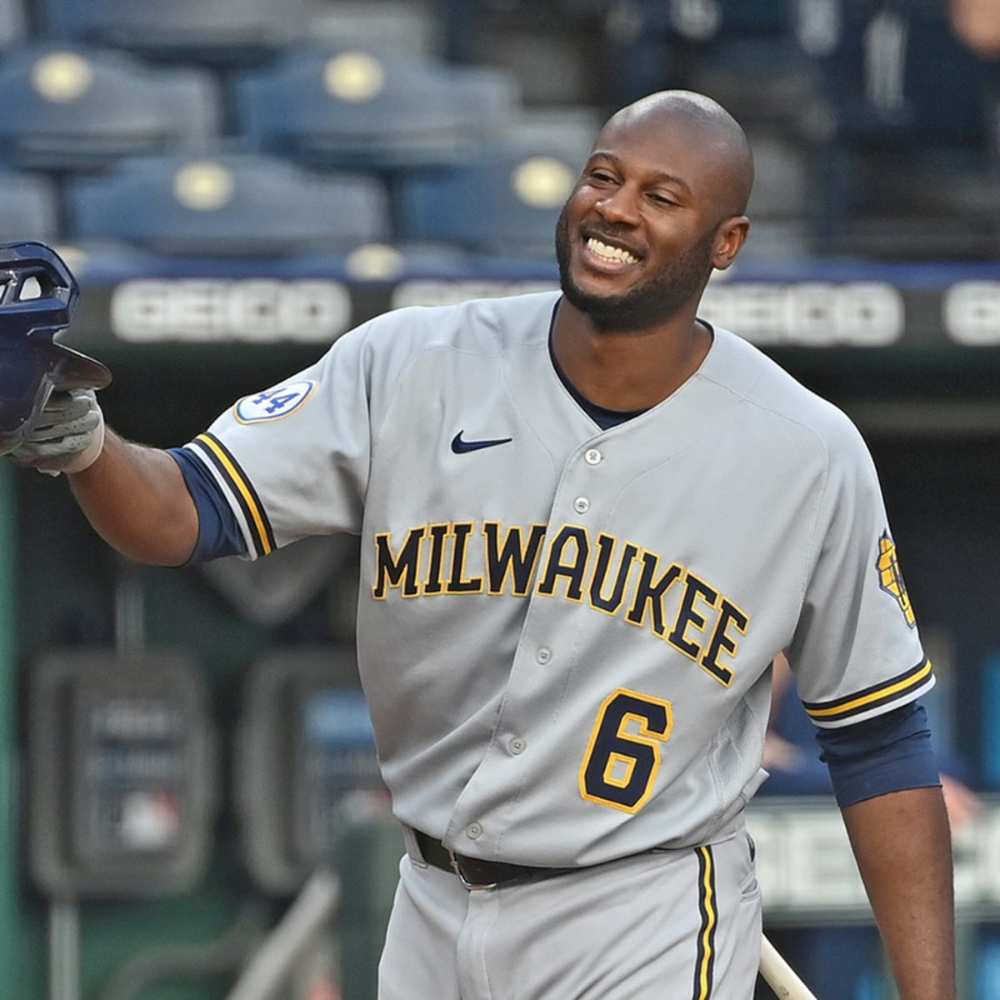
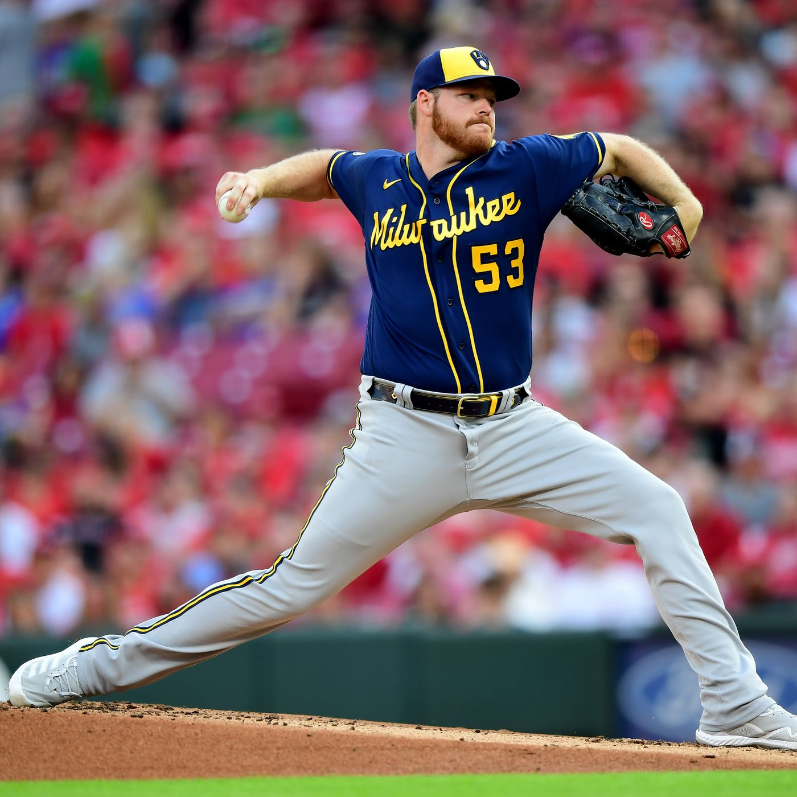

Favorite Players over the years
This is a collection of my top 5 favorite players in no particular order that have played for the Brewers.
This is Prince Fielder, a First Baseman that played with the Brewers from 2005-2011.
Click here for stats on Prince Fielder This is Ryan Braun, an Outfielder that played with the Brewers from 2007-2020.
Click here for stats on Ryan Braun This is Christian Yelich, an Outfielder that has played with the Brewers since 2018 and is currently on the team.
Click here for stats on Christian Yelich This is Lorenzo Cain, an Outfielder that played with the Brewers in 2010 and from 2018-2022.
Click here for stats on Lorenzo Cain This is Brandon Woodruff, a Pitcher that has played with the Brewers since 2017 and is currently on the team.
Click here for stats on Brandon Woodruff